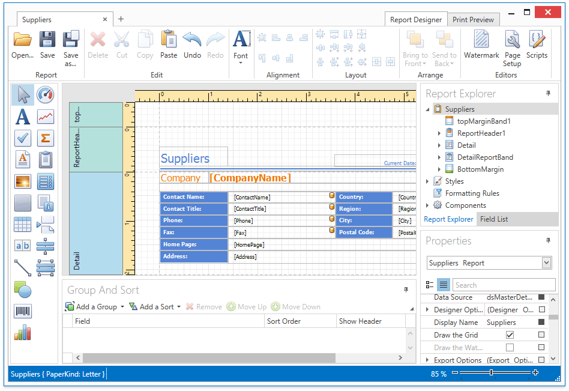

Report Designer for WPF
This guide contains information about the basic principles of creating reports with the Report Designer.
The Report Designer allows you to create new reports from scratch, bind them to data and fully customize them. In addition to report editing capabilities, it allows you to display a report's Print Preview, send its outputs to a printer or export it to various formats.

Note
The WPF End-User Report Designer does not support code completion.
Different aspects of using the Report Designer are covered in the following documentation sections.
-
The tutorials in this section provide step-by-step instructions on both basic and advanced report customization.
-
The documents in this section describe how to create reports of different types with the Report Designer.
-
The topics in this section provide information about report controls and bands used in the Report Designer.
-
The documents in this section are dedicated to the elements of the Report Designer user interface.
-
This documentation section describes the Report Wizard, which allows you to create reports based on built-in templates.
-
The topics in this section describe the capabilities provided by the Print Preview.